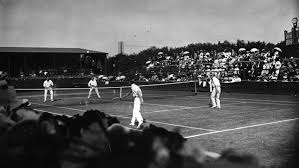

Historia Tenisa
Tenis to sport o bogatej historii, której początki sięgają czasów starożytnych. Choć nowoczesna forma tego sportu powstała w XIX wieku, jego korzenie sięgają znacznie dalej, do średniowiecza.
Początki gry:
Pierwsze wzmianki o grach przypominających tenis pochodzą z Francji z XI wieku, kiedy to uprawiano grę znaną jako "jeu de paume" (gra dłonią). Gra ta polegała na odbijaniu piłki dłonią, a później rakietą, nad siatką rozwieszoną w środku kortu. Była popularna wśród francuskiej arystokracji i szybko rozpowszechniła się w całej Europie. W Anglii gra ta była znana jako "real tennis" i była ulubioną rozrywką króla Henryka VIII.
Powstanie nowoczesnego tenisa:
Nowoczesny tenis, znany jako "lawn tennis" (tenis na trawie), narodził się w Wielkiej Brytanii w XIX wieku. W 1873 roku major Walter Clopton Wingfield stworzył grę o nazwie "sphairistike", która szybko zyskała popularność. Wingfield zaprojektował przenośny zestaw do gry, który można było rozłożyć na trawnikach, co przyczyniło się do popularyzacji tego sportu wśród brytyjskiej arystokracji. W 1877 roku The All England Lawn Tennis and Croquet Club zorganizował pierwszy turniej tenisowy na trawiastych kortach Wimbledonu. Turniej ten, znany jako Wimbledon, stał się najbardziej prestiżowym turniejem tenisowym na świecie.
Rozwój tenisa na świecie:
W drugiej połowie XIX wieku tenis zaczął zdobywać popularność na całym świecie. W 1881 roku założono United States National Lawn Tennis Association (USNLTA), obecnie znane jako United States Tennis Association (USTA), które zaczęło organizować krajowe mistrzostwa, w tym US Open. W 1891 roku we Francji rozegrano pierwszy turniej, który później stał się French Open. W 1900 roku rozpoczęły się międzynarodowe rozgrywki drużynowe znane jako Puchar Davisa, zainicjowane przez Dwighta F. Davisa.
Era Open i profesjonalizacja tenisa:
W 1968 roku rozpoczęła się era Open, która pozwoliła zawodnikom profesjonalnym rywalizować z amatorami w turniejach Grand Slam. Wcześniej turnieje te były zarezerwowane wyłącznie dla amatorów. Ta zmiana zrewolucjonizowała świat tenisa, przyciągając większą liczbę utalentowanych zawodników oraz sponsorów, co przyczyniło się do wzrostu popularności tego sportu na całym świecie. Pierwszym turniejem ery Open był French Open w 1968 roku.
Wprowadzenie nowych technologii:
W ciągu ostatnich dekad tenis przeszedł wiele technologicznych zmian. Wprowadzenie syntetycznych rakiet na początku lat 80. XX wieku zastąpiło rakiety drewniane, co znacznie wpłynęło na styl i szybkość gry. Nawierzchnie kortów także ewoluowały, z trawiastych na twarde i gliniane, co wpłynęło na rozwój różnych stylów gry. Technologia Hawk-Eye, która pozwala na dokładne śledzenie piłki i sprawdzanie linii, została wprowadzona w 2006 roku, znacznie poprawiając dokładność sędziowania i zmniejszając liczbę kontrowersyjnych decyzji.
Współczesny tenis:
Dziś tenis jest jednym z najpopularniejszych sportów na świecie, z milionami graczy i fanów na wszystkich kontynentach. Cztery turnieje Grand Slam: Australian Open, French Open, Wimbledon i US Open, przyciągają najlepszych zawodników i największe nagrody. Tenis jest także sportem o dużym znaczeniu komercyjnym, z ogromnymi inwestycjami sponsorów i transmisjami telewizyjnymi na całym świecie.
Tenis, od skromnych początków jako gra dłonią, ewoluował w globalny fenomen sportowy, który łączy ludzi na całym świecie, promując zdrowy styl życia, rywalizację i ducha sportu.
W historii tenisa wiele postaci odgrywało kluczową rolę w popularyzacji i rozwoju tego sportu. Do najsłynniejszych graczy należą:
- Roger Federer: Szwajcarski zawodnik uważany za jednego z najlepszych tenisistów wszech czasów. Zdobył 20 tytułów Grand Slam w grze pojedynczej.
- Rafael Nadal: Hiszpański gracz znany ze swojej dominacji na kortach ziemnych, zdobył 22 tytuły Grand Slam.
- Novak Djoković: Serbski zawodnik, który również zdobył 22 tytuły Grand Slam i jest znany ze swojej wszechstronności na różnych nawierzchniach.
- Serena Williams: Amerykańska zawodniczka, która zdobyła 23 tytuły Grand Slam, najwięcej w erze Open w grze pojedynczej kobiet.
- Steffi Graf: Niemiecka zawodniczka, która zdobyła 22 tytuły Grand Slam i jest jedyną osobą, która zdobyła Złoty Slam (cztery tytuły Grand Slam oraz złoty medal olimpijski w jednym roku).
Wpływ Pandemii COVID-19
Pandemia COVID-19 miała znaczący wpływ na świat tenisa, jak na wiele innych dziedzin życia. W 2020 roku wiele turniejów zostało odwołanych lub przełożonych, w tym Wimbledon, który został odwołany po raz pierwszy od II wojny światowej. Turnieje, które się odbyły, były rozgrywane bez udziału publiczności lub z ograniczoną liczbą widzów, co wpłynęło na atmosferę i dochody z biletów.